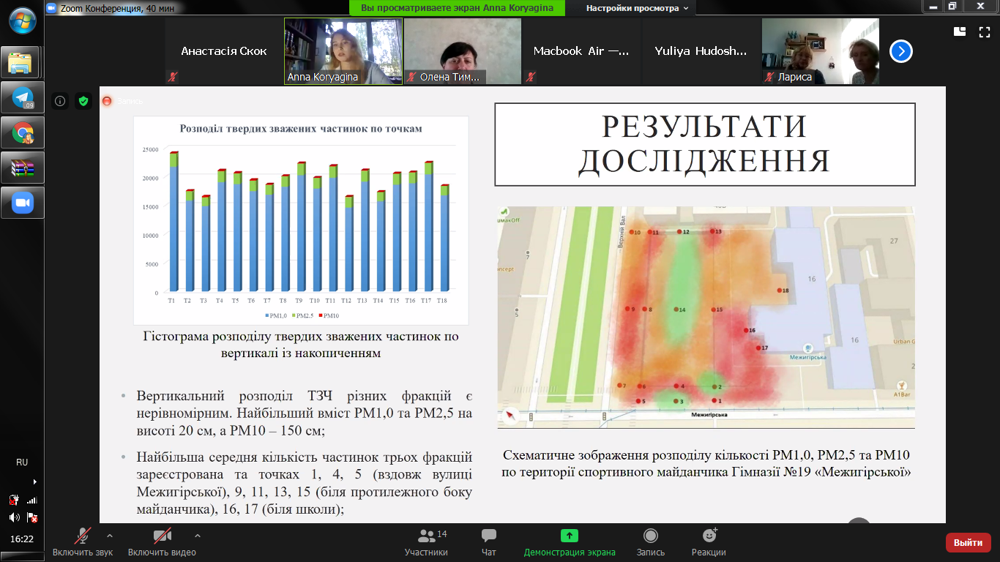

Дизайн експерименту та планування роботи
Н.І. На початку команда планувала не тільки провести дослідження, а і влаштувати «зелену фортецю». Учасники хотіли засадити паркан диким виноградом, накопавши його десь на Подолі. Після декількох ітерацій обговорення з експертами ПРООН та «Агентів змін» ми вирішили зробити цей експеримент соціальним. Почати з малого: зробити презентацію для адміністрації школи та батьків і дізнатися, чи здатні вони щось зробити з цим майданчиком, зробити його краще, щоби дітям було зручніше й безпечніше проводити там час.
У нас був маленький бюджет і дуже великий майданчик. Ми разом вирішили, що буде дуже складно озеленити усю цю територію по периметру. Тому доцільніше було зосередитися на дослідженнях і донести до батьків важливу інформацію.

Чернетка дизайну експерименту
Н.І. Ми провели дві зустрічі, на яких спланували роботу: поспілкуватися з адміністрацією школи, підготувати презентацію, зробити заміри. Але вже на другій зустрічі я зрозуміла, що команда нічого не зробила. Учасники пообіцяли, що все зроблять, і потім усе — вони перестали брати участь у роботі.
Формування нової команди
Н.І. Після Нового року я почала шукати нову команду, бо розуміла, що одна всього цього не зроблю. Мене підтримав Павло Калюк — у нас була гіпотеза, що зберемо команду зі спільноти «Подоляночка». Та в якийсь дивний спосіб я знайшла Аню.
Я йшла додому з роботи й зустріла Настю з екоклубу «Зелена хвиля». Я розповіла, що в мене немає команди, і запитала, чи може хтось із клубу долучитися. Настя сказала, що є Аня, яка пише магістерську роботу на цю тему. Я зателефонувала Ані та вже через кілька днів ми зустрілися в кав’ярні й почали працювати. Отже, вся наша команда — це я та Аня.
А.К. Ми зустрілися, і я сказала, що для мене не проблема надати дані. Співпраця з зовнішніми організаціями чудово актуалізувала досліджувану проблему, що, очевидно, могло допомогти мені на захисті диплому. Також це могло допомогти експерименту — стати вагомішим із науковим обґрунтуванням небезпеки пилового забруднення. Так я опинилася в цьому вирі подій.
Наші проєкти були автономними, і це диво, що ми змогли поєднати зусилля дуже швидко, без якихось непорозумінь. Моя мета як екологині — виявити проблему та запропонувати рішення. Завдання «Агентів змін» те саме — знаходити й розв’язувати проблеми. Тому це з колективного підсвідомого: одночасно народилися ці ідеї, які розвивалися автономно, але зійшлися в одній точці.
Дослідження
Н.І. Аня зосередилася на завершені дослідження. Вона для себе розв’язувала питання з дипломом, а мені давала контент для презентацій. Ми працювали пліч-о-пліч: вона збирала дані, а я їй допомагала з приладами, комунікувала з адміністрацією школи, переносила дані в презентацію. 90% роботи в цьому експерименті зробила Аня, і за це їй дуже дякую.
Ми з нею працювали, як годинник, як команда, і я кажу їй про це кожен день, коли ми спілкуємося. Це найголовніше для мене — вона мене не кинула й допомогла це зробити.
А.К. Я вимірювала кількість частинок певного розміру на кубічний метр на території майданчика, що дозволило визначити закономірності їхнього розподілу у просторі. В результаті створила схему забруднення спортивного майданчика, визначила внесок автомобільного транспорту в це забруднення, а також роль планування школи в розподіленні частинок.

Схема пилового забруднення майданчика
«Дослідження дає розуміння кількості частинок пилу різних фракцій — 1,0, 2,5 та 10 pm на висоті 20 см, 50 см та 150 см. Також ми дістанемо розуміння, з якою інтенсивністю розповсюджуються пилові частки від дороги та яка їхня концентрація біля дороги, біля майданчика, на самому майданчику та біля школи.»
Експеримент зі шкільним майданчиком
Спілкування з адміністрацією школи
Н.І. Спілкування було дуже просте. Я зателефонувала [директорці] пані Ларисі, представилася, розказала їй про нашу ініціативу: про те, що ми робимо, і що ми хотіли б презентувати результати. Вона одразу погодилася. Сказала: «Дякую, нам дуже цікаво послухати».
Ми хотіли зробити презентацію саме на майданчику школи до карантину, щоби про проблему дізналося набагато більше людей. Я з ними зв’язалася один чи два рази, і вони вже потім чекали на сам результат і на дату проведення презентації. Зі школою не виникало ніяких проблем у комунікації.
Пошук рішення
Н.І. Нам потрібен був зворотний зв’язок щодо експерименту й досліджень. Чи правильно ми все робимо. Я написала Максиму Сороці, експерту з міжнародного проєкту «Чисте повітря для України». Він дав нам кілька дуже корисних порад щодо рішення й підтвердив, що методологія Ані коректна.
Ми обговорювали три рішення. Перше — це щит триметрової висоти вздовж Межигірської та Верхнього Валу. Друге і третє запропонував Максим Головко — зелені насадження по периметру замість щита та перетворення спортивного майданчика на справжній сквер. Базуючись на коментарях Максима Сороки, ми зупинилися на першому та другому рішеннях. Коли він побачив візуалізацію подвійної «стіни» з дерев і кущів, то зрадів, як дитина.
М.Г. Варіант зменшення загазованості стадіону за допомогою суцільної пластикової стіни, хоч і був би ефективним, але все ж таки погіршив би публічний простір. Користуватися тротуаром, проходячи вздовж пластикової чи металевої стіни — не найприємніше заняття. Здалося очевидним, що наша дизайн-задача — створити стіну, якої б не було. І це чудово вирішується створенням зеленої стіни з дерев та кущів. Вони виконують ту саму функцію перешкоди для пилу, газу й шуму та водночас покращують простір. Цю ідею ми підгледіли в іншому проєкті «Міського сафарі» і всього лише схрестили дві ідеї.
Озеленення у два етапи: спочатку кущі, а потім дерева. Візуалізація Олени Мельник.
М.С. Як захисні зелені насадження ми використовуємо дві фітоконструкції — з дерев та кущів. Так, крони дерев виростуть за 5–10 років, тому на першому етапі захищати від дрібнодисперсних часток пилу PM2.5 та PM10 будуть кущі.
Майданчик розташовується на перехресті. Машини стартують і зупиняються, з цим пов’язані недогріви й перегріви автомобілів, пікові викиди забруднень. Ми вирішили, що маємо створити аеродинамічні бар’єри, які відгородять місце для школярів від зони турбулентного переміщення забруднених мас повітря. Кущі захищатимуть від приземного переміщення дрібнодисперсного пилу. А далі, що більше в дерев буде розвиватися кронність, то більше вони створюватимуть додатковий аеродинамічний ефект — захищатимуть від пилу на більшій висоті.
Це компромісне рішення між бажанням екологів захистити всіх і вся та урбаністів — створити відкритий, приємний простір, несхожий на бетонні стіни. Та й просто цікаво це зробити: проєкт можна втілити швидко, він не вимагає значних ресурсів для реконструкції й демонтажу. Я буду відвертий: якби це був суцільний щит, ми б створили найкращий аеродинамічний бар’єр. Але, ми ж маємо розуміти, що цей проєкт про створення екопростору, а не якоїсь тюрми для школярів.
Презентація результатів
Н.І. Ми провели презентацію для батьківського комітету та адміністрації школи. Аня розповіла про дослідження. Ми отримали багато цікавої інформації від самої адміністрації. От, наприклад, ми не знали, що вони там із 2009 року намагаються щось зробити з цим майданчиком, але в них не виходить. Ми зробили опитувальник і чекаємо на відповіді від батьків і адміністрації, аби зрозуміти, чи планують вони щось змінювати, чи спрацювала наша гіпотеза.
Мені запам’яталася реакція декількох вчителів і директорки: вони дружньо відреагували на презентацію. Сказали: «Вау, ми ніколи не думали, що це може бути небезпечно. Гайда негайно щось висаджувати.» Вони замислювалися про небезпеку, але це стосувалося близькості дороги. Про повітря в них не було ніяких гіпотез, а отже й незадоволеності.Команда «Міського сафарі», що працює зі шкільним майданчиком гімназії № 19, провела презентацію для адміністрації школи та батьків.

П.К. Якщо там немає якогось лідерства, мій прогноз такий, що люди, ймовірніше, щось собі думатимуть, але не робитимуть якихось активних дій. Я боюся, що вони ввійдуть в оборонну позицію. Мовляв, давайте краще наші діти будуть гуляти не тут, а з іншого боку десь, у подвір’ї. Сумніваюся, що без прикладу, без «потрібно робити так і так, давайте всі висадимо по кущику якоїсь рослинки та будемо їх поливати», вони зможуть почати розв’язувати проблему. У нас дуже слабкий досвід взаємодії.
Директорка розповідала, що їм десь років із десять тому обіцяли побудувати капітальну споруду на місці майданчика. Мене це дещо зачепило — ці речі стануть закритими, недоступними для місцевих. Зараз це все ж таки якийсь публічний простір.
Майбутнє
Подальша робота зі школою
А.К. Мені цікаво працювати далі. Я вже настільки сильно з цим усім пов’язана, що мені було б цікаво доробити цей проєкт. Можу допомогти школі знайти якісь зв’язки, можу спілкуватися з різними установами. Потрібно просувати ситуацію на рівень району, виводити в медіапростір. Мені хотілося б цьому посприяти. Я не науковець, що просто рахує, а, швидше, екологиня, яка працює над повноцінним розв’язанням проблеми.
Масштабування рішень
М.С. Мені дуже подобається рішення, яке запропонували архітектори. Вони виходили із суто типової конструкції спортивного майданчика пострадянської школи. Отже, з архітектурної точки зору я впевнений — цей проєкт можна масштабувати.
Створення Спортивної площі
М.Г. Шкільний стадіон — це не лише стадіон для школи, а й спортивна площа для всього району. Тому варто було б не закривати стадіон суцільним парканом, а навпаки — розширити його і зробити повноцінну спортивну площу. Нею могли б користуватися і школярі, і спортсмени, і мешканці всього району. На Подолі не так багато є відкритих спортивних просторів, тим паче стадіонів. Такий простір був би живим і корисним не тільки з 8:00 і до 14:00, а впродовж усього дня.
Посилення спільноти
П.К. У будь-якому разі, це якийсь рух уперед і якась освіта. Навіть якщо проєкт не реалізують, залишиться якась експертиза й позитивний досвід взаємодії. Не так багато в нас, на жаль, таких низових ініціатив. Шкода, лише, що достатньо мало людей із локальної спільноти було залучено.
Рекомендації
Поетапне впровадження проєкту
М.С. Якщо впроваджувати проєкт поступово, я би рекомендував спочатку зробити зелений захисний бар’єр з кущів. Їх можна поетапно висаджувати, починаючи від перехрестя — зони з забрудненішим повітрям. Це надасть змогу розпочати реалізацію проєкту навіть з обмеженим бюджетом.
Залучення школярів до реалізації
М.С. Я б радив батьківському комітету й адміністрації школи залучати до реалізації проєкту якомога більше дітей. Це дасть нам освітній ефект. Школярі без проблем можуть посадити ці рослини. Ба більше — дати рослинам імена, приклеїти таблички класів й далі за ними стежити, дбати про них.
Віра, що все можна змінити
М.Г. У мене є рекомендація нічого не боятися, вірити у світле майбутнє й невпинно лупати сю скелю, щоб усе ж таки зробити стадіон найкращим місцем на Подолі. Окрім того, звісно, звертатися до експертів, які допоможуть зробити місце справді корисним для користувачів, а не просто висадити дерева для галочки, щоби здавалося, що проблему вирішено.
Посилення зв’язків
П.К. Потрібно знайомитися без конкретної проблеми, без конкретного завдання. Дуже часто ми ініціюємо знайомство з гучним закликом: «Привіт, сусіди! Нумо зробімо ОСББ», наприклад. Але для початку потрібно побудувати базові зв’язки: «Привіт, сусіди! Нумо знайомитися.» Коли ти одразу виходиш із якоюсь пропозицією, люди діляться на табори — хто куди. Починають на цьому тлі сваритися. У нас немає культури дискусії, усі наелектризовані стресом. Ми живемо в постгеноцидному суспільстві, де люди бачать загрозу там, де її немає. Тому я б почав із простого знайомства.